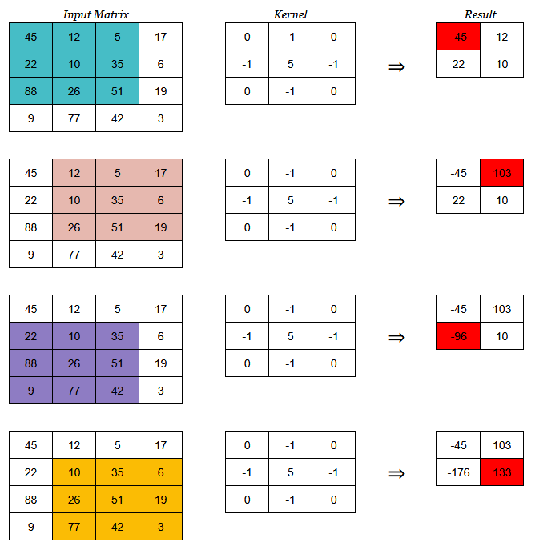
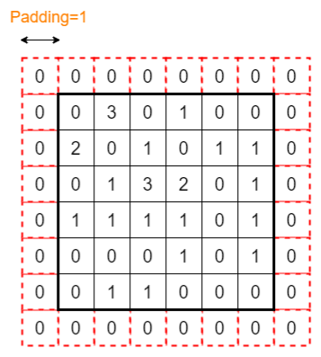
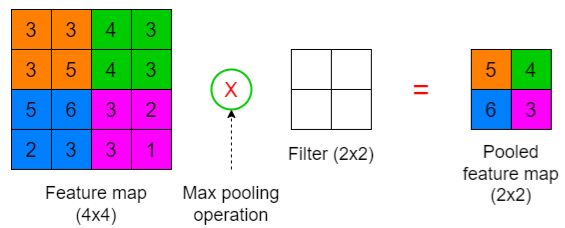
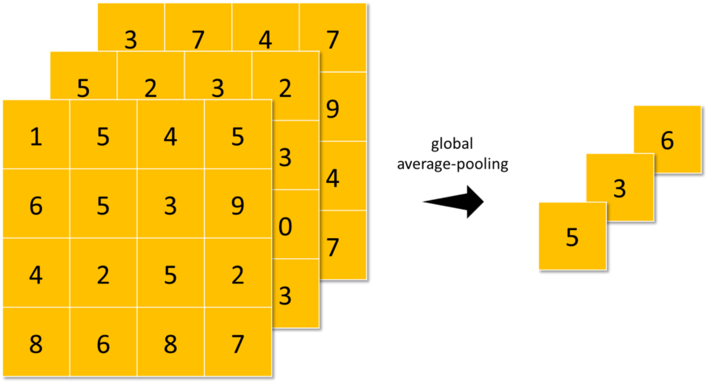

ResNet18 and EffNet-B0 are small, quick models that are effective for nearly any type of image data.
Once you’ve squeezed all the juice out of those, you can scale up to their bigger versions and almost always get better accuracy.
Also see this guide for suitable baseline models: link
Terms
Transfer Learning - Shortens time and resources required for training by using a feature representation technique over pre-trained models. These pre-trained models are generally trained using high-end computational resources and on massive datasets.
Methods
Using the pre-trained weights and directly making predictions on the test data
Using the pre-trained weights for initialization and training the model using the custom dataset
Using only the architecture of the pre-trained network, and training it from scratch on the custom dataset
Pre-trained CNN Models
VGG
Xception
ResNet
InceptionV3
InceptionResNet
MobileNet
DenseNet
NasNet
EfficientNet
ConvNEXT
All these pre-trained models can be loaded as keras models using the keras.application API
Specifications of these models and instantiation code are in this article
Data-Centric
Improving your data will likely improve your model more than testing different algorithms or tuning more hyperparameters
Good Data:
Is defined consistently (definition of labels, y, is unambiguous)
e.g. consistent object labeling procedures
Has coverage of important cases (good coverage of inputs, x)
e.g. samples of every combination of features the model will encounter
Has timely feedback from production data (distribution covers data drift/concept drift)
Is sized appropriately
Examples
Image
Improve consistency of labeling procedures
(top-left) Clear separation of boxes; (top-right) Tail of left iguana included; (bottom) Include all iguanas in one bounding box
FYI 1 is probably best
Solution: Improve procedure by making sure only 1 of these ways is used by labellers given this type of picture
Audio
You discover you speech recognition model performs poorly when there’s car noise in the background
Solution: Get more training data with car noise in the background
Steps
Train a model
Error Analysis: Investigate which types of data you model performs poorly on. The points the model performs really poorly on will be edge cases or errors in data collection, measurement, entry, etc.
Improve these data
For edge cases, collect more data, augment your data, generate more data (simulation?) (i.e. change inputs of x)
For errors, make labeling procedure more consistent if some are found to be ambiguous (i.e. Change the labels of y)
Augmented training images are used to get embeddings. Apply nearest neighbors to misclassified images with embeddings to get new data. Add to training data
Steps
Generate a very large set of randomly augmented images from the training data (treat these as “candidates” to source from).
Train an initial model and predict on the validation set.
Use another pre-trained model to extract features (aka embeddings) from the validation images and augmented images.
For each misclassified validation image, retrieve the nearest neighbors (based on cosine similarity) from the set of augmented images using the extracted features. Add these nearest neighbor augmented images to the training set. I will call this procedure “Data Boosting”.
Retrain model with the added augmented images and predict on validation set.
Repeat steps 4–6 until we’ve reached the limit of 10K images.
Notes
Although augmented images were used for this competition, in practice any large set of images as candidates to source from.
I generated ~1M randomly augmented images from the training set as candidates to source from
The data evaluation spreadsheet is used to keep track of inaccuracies (misclassified images) and to annotate the data. Alternatively, I also spun up an instance of Label Studio with a PostgreSQL backend but I decided not to use it for this competition due to the unnecessary overhead.
For the pre-trained model, I used ResNet50 trained on ImageNet.
I used the Annoy package to perform approximate nearest neighbor search.
The number of nearest neighbors to retrieve per misclassified validation image is a hyper-parameter.
Especially designed to work with images. They are widely used in the domain of computer vision
To use MLPs with images, we need to flatten the image. If we do so, spatial information (relationships between the nearby pixels) will be lost. So, accuracy will be reduced significantly. CNNs can retain spatial information as they take the images in the original format.
CNNs can reduce the number of parameters in the network significantly. So, CNNs are parameter efficient.
Grayscale image is represented as (height, width, 1) or simply (height, width) since the 3rd dim is 1
RGB image is represented as (height, width, 3), where 3 is the number of color channels in the image (3D array)
Training
Besides finding the best weight and bias, we also look for the best filters and bias terms in the convolution step.
The filters are just 3x3 number matrices. So, the goal is to find the optimal values for all these elements — the filters, bias terms in the convolution step, and the weight and bias terms in the neural network.
Convolutional Layers
The first convolutional layer takes the images as the input and begins to process
There can be multiple convolutional layers
The ReLU activation is used in each convolutional layer
Extracts a set of features from the image while maintaining relationships between the nearby pixels
Components and Operations (fig: Gray scale, 1 Filter) 
Convolutional Operation is a partial matrix multiplication: 1st row (image) * 1st col (kernel) + 2nd row (image) * 2nd col (kernel) +…
Example is row*col but evidently it can also be row*row or col*col. Probably doesn’t matter as long as it’s consistent.
Kernel (aka Filter or Feature Detector)
There can be multiple filters in a single convolutional layer
Multiple filters are used to identify a different set of features in the image
The number of filters increases in each convolutional layer
e.g If we use 16 filters in the first convolutional layer, we usually use 32 filters in the next convolutional layer, and so on
The size of the filter and the number of filters should be specified by the user as hyperparameters.
The size should be smaller than the size of the input image.
The elements inside the filter define the filter configuration.
Image section
Section of the input image matrix that is multiply-summed by the kernel
The size of the image section should be equal to the size of the filter(s) we choose.
We can move the filter(s) vertically and horizontally on the input image to create different image sections.
The number of image sections depends on the stride we use.
Stride: The number of steps (pixels) that we shift the filter over the input image
Stride = 1 is moving the filter on the image horizontally by one step to the right (see 2nd row of images)
Feature map
Output matrix from the Convolutional Operations
Stores the outputs of different convolution operations between different image sections and the filter(s)
Size depends on the stride
The number of elements in the feature map is equal to the number of different image sections that we obtained by moving the filter(s) on the image.
Input for the next pooling layer.
Image Input is the input matrix
Padding adds additional pixels with zero values to each side of the image which helps to keep the feature map of the same size as the input 
If there are several convolutional layers in the CNN, the size of the feature map will be further reduced at the end so that we cannot do other operations on the feature map
Example: New size of the input image is (8,8)
If we do the convolution operation now with Stride=1, we get a feature map of size (6x6) that is equal to the size of the original image before applying Padding
Convolution and pooling layers are used together as pairs (i.e. one is followed by the other)
Objectives
Extract the most important (relevant) features by getting the maximum number or averaging the numbers.
Reduce the dimensionality (number of pixels) of the output returned from previous convolutional layers.
Reduce the number of parameters in the network.
Remove any noise present in the features extracted by previous convolutional layers.
Increase the accuracy of CNNs.
Components and Operations (max pooling, stride = 2) 
The Pooling Operation happens between a section of the feature map and the filter. It outputs the pooled feature map
For RGB, pooling operations will be done on each channel independently.
Types
Max pooling: Get the maximum value in the feature map section where the filter is applied.
Average pooling: Get the average of the values in the feature map section where the filter is applied.
Global-Average-Pooling: similar to average-pooling but instead of using N×N patches of the feature maps, it uses all feature maps area at once 
Filter: empty so no transformation, it only sets the size of the image section where the pooling operation takes place
Size of the filter should be specified by the user as a hyperparameter.
Size should be smaller than the size of the feature map
If the feature map has multiple channels, we should use a filter with the same number of channels
Feature Map: Input to the pooling layer
Size of the feature map sections should be equal to the size of the filter we choose
The number of sections depends on the Stride
Pooled Feature Map: Output of the pooling layer
Input for the next convolution layer (if any) or for the flatten operation.
For RGB, there are same number of channels in the feature map and the pooled feature map (see examples in Covolutional layers section)
Other hyperparameters
Stride: The Stride is usually equal to the size of the filter. If the filter size is (2x2), we use Stride=2. (also see Convolutional layers section)
Padding: Padding is applied to the feature map to adjust the size of the pooled feature map (also see Convolutional layers section)
Flattening
The Flatten Operation flattens the pooled feature map output to a single column so that it can be fed the Multiayer Perceptron (MLP) and the image can be classified
Occurs after the final pooling layer is completed
Unlike flattening the original image (i.e if a MLP was used to classify an image), important pixel dependencies are retained when pooled maps are flattened.
\(b\) is the bias value that’s optimized by gradient descent which is added to the weighted sum, \(\Sigma\)
\(\Sigma\) represents the weighted sum which is summation of all the inputs times their calculated weights
The piecewise linear icon represents the RELU activation function (all negative values to zero)
The sigmoid icon respresents the softmax activation function (aka logistic function) that’s used for classification
Layers of the MLP are used to classify the image
Input is the flattened, pooled feature map
The ReLU activation is used in each fully connected layer except in the final layer in which we use the Softmax activation for multiclass classification.
.png)
{kind=link}
{kind=link}
{kind=link}
{kind=link}
{kind=link}
{kind=link}
{kind=link}
{kind=link}
{kind=link}
{kind=link}
{kind=link}
{kind=link}
{kind=link}